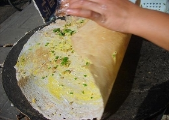
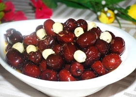
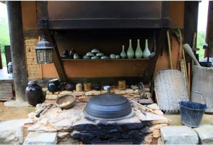
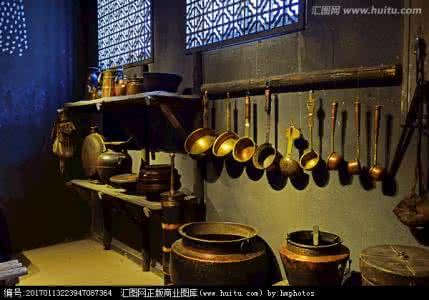
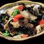

| 用户登录 | ||
| 用户名： | ||
| 密码： | ||
石磨的普及
从新石器时代直到殷商时期，对谷物的加工一直比较原始简单。先民们通过碾盘、碾棒、杵臼等对谷物进行粗加工，难以提供大量去壳净米。到了周代，石岂的出现，是谷物初加工方法的一次飞跃。石岂，即石磨。谷物的初加工，由以碾舂为主变为以磨为主。随着石磨的普及，周人的饮食状况有了很大的改善。


肉类开始加工
与谷物加工相比，周代的肉类加工更为考究。而且，作为对肉类初加工的选割，与后期烹制具有同样的重要性。尤其是周王室贵族在祭祀、宴会时所享用的各种肉类，其选割及烹制，由专设的官署“内饔”与“外饔”执掌。周人已完全懂得选择无病、无特殊腥臊异味而又健壮的畜禽，并辨别畜禽各部位，然后施行宰割。
王师傅铁板豆腐

农家一碗香
狼牙土豆
紫菜包饭